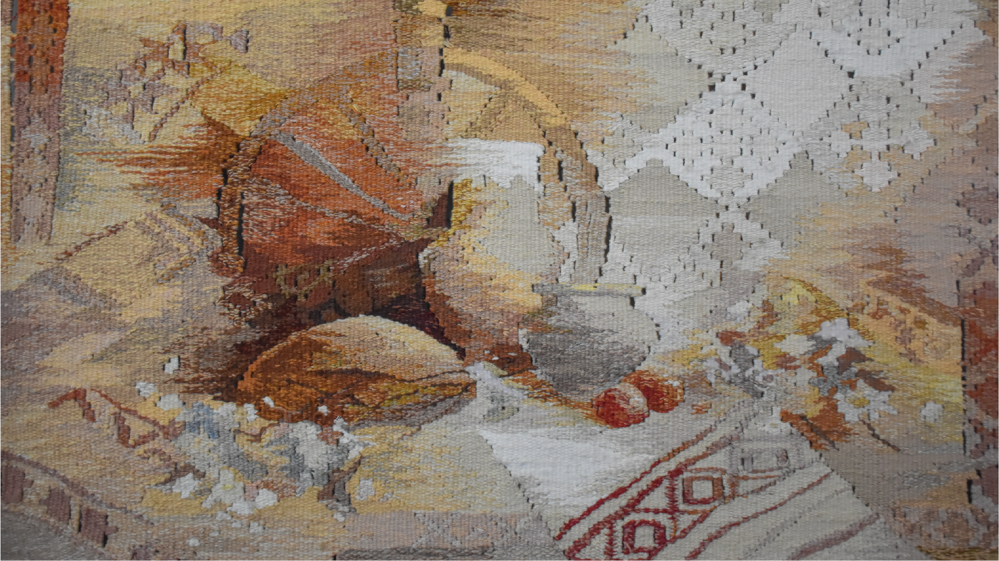
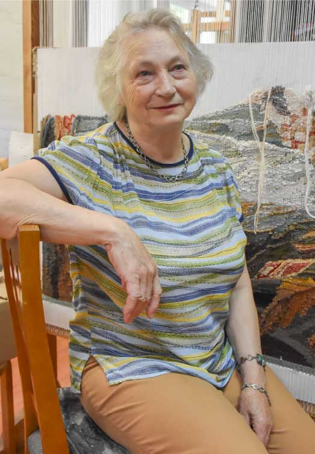
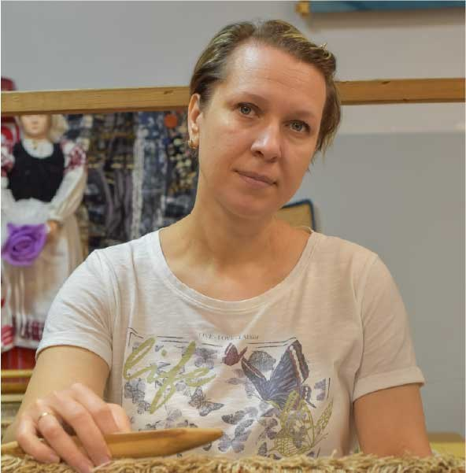

Праэкт «Спадчына»
Наша «Спадчына»
У рамках традыцый ствараем палатно будучыні
Ніці традыцыі
Кожная нітка захоўвае памяць стагоддзяў і велізарны досвед майстроў-ткачоў, які перадаецца
з пакалення ў пакаленне
Палотны гісторыі
Спляценне традыцыі тканага мастацтва і нязвычнага, творчага погляду на спадчыну продкаў
Архітыктурная спадчына Гомельшчыны
Гісторыя стагоддзяў, якую захоўвае Гомельская вобласць
Аб праэкце
Аб'яднаем тых, каго натхняе культура роднага краю
Распаўсюджванне традыцыйных рамёстваў — адна з важных задач для захавання культурнай спадчыны краіны. Інфармацыйна-тэматычны каталог, які ўключае
ў сябе інфармацыю аб архітэктуры і ткацтве Гомельскай вобласці, дапаможа папулярызаваць гэтыя творчыя напрамкі сярод моладзі.
- Абраная тэма з гадамі не губляе актуальнасць
- Каталог спрыяе развіццю цікавасці да гісторыі роднага краю
- Недахоп літаратуры па тэме развіцця беларускага ткацтва
Праект можа выкарыстоўвацца як з мэтай аднаўлення цікавасці
да напрамках
у дэкаратыўна-прыкладным мастацтве сярод навучэнцаў дзіцячых мастацкіх школ, аб'яднанняў па інтарэсах, так і для самастойнага азнаямлення.
Матэрыял будзе даступны і цікавы кожнаму.
Наша « Спадчына»
На старонках каталога вы пазнаёміцеся не толькі з работами нашых навучэнцаў,
але таксама і даведаецеся шмат новага пра:
- Гісторыю развіцця шпалернага ткацтва, пачынаючы першай мануфактурай
і заканчваючы нядаўнімі дасягненнямі беларускіх майстроў у сферы габеленага ткацтва - Вялікі шэраг тканых тэхнік, многія з якіх перадавалія продкамі скрозь стагоддзі, і выкарыстоўваюцца дагэтуль
- Чараду забытых і нязведаных помнікаў архітэктуры, кожны з якіх захоўвае ўнікальную гісторыю сваёй зямлі і складае кавалачкі архітэктурнага летапісу рэгіёна
Спадзяюся, што каталог стане для кагосьці крыніцай натхнення і ведаў.
Гэта — наша спадчына, і мы павінны берагчы яе і памятаць.
Аўтары работ
Працэс стварэння габелена, ад задумкі і эскіза да гатовага палатна, з першых вуснаў
Ніці традыцыі
Кожная нітка захоўвае памяць стагоддзяў і велізарны досвід мастроў-ткачоў,
які перадаецца з пакалення ў пакаленне
Уточны рэпс
Самая простая класічная тэхніка габеленага ткацтва, якая з'яўляецца асновай для вялікага мноства іншых.
Ткацтва на касую ніць
Гэтая тэхніка дазволіць дамагчыся адсутнасці прасветаў паміж участкамі ўткоў рознага колеру.
Ткацтва на прамую ніць
Ніткі ўтка рознага колеру на суседніх участках габелена не ўзаемадзейнічаюць паміж сабой,
з-за чаго ўзнікаюць невялікія прасветы.
Пераборнае ткацтва
З дапамогай гэтай тэхнікі на некаторых участках палатна можна дамагчыся цікавага двухколернага ўзору, работая дзвюма ніткамі ўтка.
Сумаха
З'явіўшысь на Усходзе, тэхніка пляцення «Сумаха» стварае неверагодна выразны рэльеф палатна
ў сучасным беларускам ткацтве.
Аўтарскія тэхнікі
Дзякуючы творчай свабодзе і фантазіі навучэнцаў
на аддзяленні ўзнікаюць новыя
і нязвычныя дэкаратыўныя прыёмы.
Палотны гісторыі
Спляценне традцыі тканага мастацства і сучаснага, нязвычнага погляду на спадчыну продкаў
- Габелены
{kind=link}
{kind=link}
{kind=link}
{kind=link}
{kind=link}
{kind=link}
{kind=link}
{kind=link}
Настаўнікі
Адначасова ткачы, натхняльнікі і прафесіяналы сваёй справы
— тыя людзі, без каго аддзяленне не змагло б існаваць

Данілава Ірына Мікалаеўна
Выкладчык спецдісцыплін
Вінаградава Ольга Міхайлаўна
Выкладчык спецдісцыплінКантакты
Нашы кантакты для супрацоўніцтва, пытанняў або прапаноў
Адрас
Максіма Багдановіча 26, 246010
Кантактны нумар
+375(23)560-04-06
Пошта
mail@artcollege-gomel.by